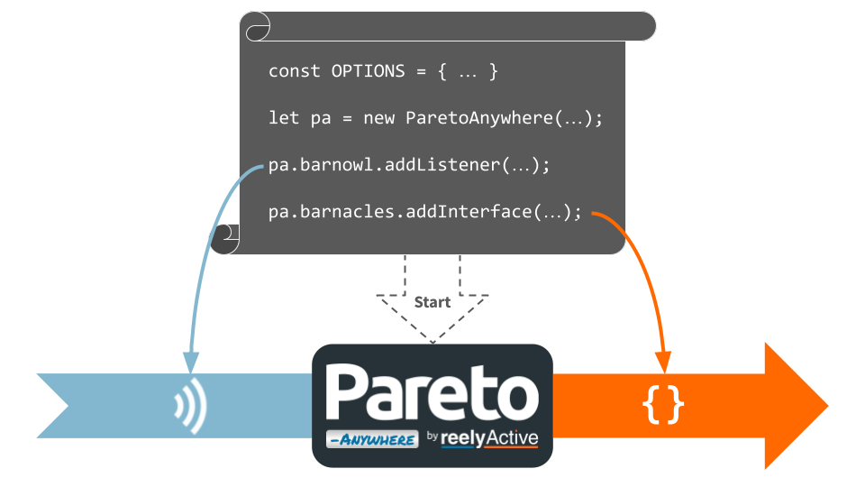

Create a Pareto Anywhere startup script
Our step-by-step guide to run a custom Pareto Anywhere configuration, initiated by a simple startup script.
The TL;DR (Too Long; Didn't Read)
Learn how to create and run a script which configures Pareto Anywhere exactly to your needs.
- Why custom configuration?
- Pareto Anywhere uses a highly modular architecture: adding/removing modules from the default configuration may better accommodate your specific IoT deployment.
- Is this JavaScript?
- Yes, this is a simple Node.js script which can easily be edited by anyone with basic coding skills.
- Is there an easier way?
- At reelyActive, our business is impartial guidance. Contact us if you'd prefer that we make sense of things together.
Create the startup script Step 1 of 3
Create the bin/pareto-anywhere-x file that reflects your specific IoT deployment.
- Why a script?
- A script combines the flexibility of code with the practicality of a configuration file.
- Just one?
- No, create as many scripts as there are configurations to be supported!

Prerequisites
Pareto Anywhere installed from GitHub
These instructions assume that Pareto Anywhere has been installed on the target machine by cloning the /pareto-anywhere repository.
Create the default startup script Part 1
In the bin folder of the cloned pareto-anywhere repository, create a file called pareto-anywhere-x, changing x for the name of your configuration (ex: pareto-anywhere-custom), and copy Ctrl+C and paste Ctrl+V in the following contents:
#!/usr/bin/env node
const ParetoAnywhere = require('../lib/paretoanywhere.js');
const OPTIONS = {};
let pa = new ParetoAnywhere(OPTIONS);
The default script is as simple as that! Validate that it works by opening a terminal and running, from the pareto-anywhere folder, the following command: node bin/pareto-anywhere-x, again changing x for the name of your configuration (ex: node bin/pareto-anywhere-custom).
Edit OPTIONS [OPTIONAL] Part 2
Edit the OPTIONS in the script, as JSON, if required.
For example, to disable CORS, specify the OPTIONS as follows:
const OPTIONS = { useCors: false };
Add modules [OPTIONAL] Part 3
Edit the script to add optional modules, if required.
For example, to add logfile functionality using the barnacles-logfile module, add the highlighted lines below.
#!/usr/bin/env node
const ParetoAnywhere = require('../lib/paretoanywhere.js');
const OPTIONS = {};
// ----- Exit gracefully if the optional dependency is not found -----
let BarnaclesLogfile;
try {
BarnaclesLogfile = require('barnacles-logfile');
}
catch(err) {
console.log('This script requires barnacles-logfile. Install with:');
console.log('\r\n "npm install barnacles-logfile"\r\n');
return console.log('and then run this script again.');
}
// -------------------------------------------------------------------
let pa = new ParetoAnywhere(OPTIONS);
// Add the Logfile interface with the given options
const BARNACLES_LOGFILE_OPTIONS = {};
pa.barnacles.addInterface(BarnaclesLogfile, BARNACLES_LOGFILE_OPTIONS);
Modify the above, as required, to accommodate barnowl-x input interfaces (see /barnowl) and/or barnacles-x output interfaces (see /barnacles).
Run the startup script Step 2 of 3
Validate that Pareto Anywhere runs with the specified configuration.
- How does it run?
- Both Pareto Anywhere and the startup script run using Node.js, which is a free, open-source, cross-platform JavaScript runtime environment.
- Production-friendly?
- Yes, see Part 3 below which explains how to run, in a production environment, as a background service on common platforms.

Run the script Part 1
From the terminal, change to the pareto-anywhere folder and run the command node bin/pareto-anywhere-x, changing the "x" to the name of your configuration. Verify that there are no errors in the console logs.
If any modules were added in Step 1 above, then it is normal to observe messages about missing modules that need to be installed: this is covered next in Part 2.
Install missing modules [OPTIONAL] Part 2
Should any modules be missing, these must be installed manually as follows.
From the terminal, in the pareto-anywhere folder, install each missing module with the command npm install module-name, changing "module-name" for the name of the module.
Run the startup script again and verify that there are no erorrs in the console logs.
The npm install command will update the package.json file which is under git version control. See Step 3 below for instructions on updating with a modified package.json.
Run as a service [OPTIONAL] Part 3
In a production environment, Pareto Anywhere is normally run as a service which starts automatically on boot and restarts should any errors be encountered.
-
Run Pareto Anywhere as a Windows service
Our step-by-step guide for production deployments on Windows machines.
Update Pareto Anywhere Step 3 of 3
Update to the latest version of Pareto Anywhere while maintaining the custom configuration.
- Why update?
- Pareto Anywhere is frequently updated with features, fixes and support for new IoT devices.
- Any risks?
- There should be no breaking changes in minor version updates. Nonetheless, for production environments, consider including a staging instance as a best practice.
Fetch and revert Part 1
From the terminal, in the pareto-anywhere folder, check for updates with the command git fetch.
If there are no updates to the master branch, skip this entire step and check again for updates in future.
Before pulling updates, first check if any git version-controlled files have been locally modified, by running git status. Modified files will be listed under Changes not staged for commit.
Revert any locally-modified files, with the command git checkout -- filename, changing "filename" to the actual file name. In most cases, only package.json will have changed, which can be reverted with the command git checkout -- package.json.
Run git status once again to confirm that there are no locally-modified files.
It is normal to see the startup script itself listed under Untracked files.
Pull and install Part 2
From the terminal, in the pareto-anywhere folder, update to the latest version of the code base with the command git pull origin master --recurse-submodules.
Update any package dependencies with the command npm install.
Update added modules [OPTIONAL] Part 3
If any modules were added in Step 1 above, they can each be updated by again running from terminal, in the pareto-anywhere folder, the command npm install module-name, changing "module-name" for the name of the module.
Restart the service [OPTIONAL] Part 4
If running Pareto Anywhere in the background as a service, it may be necessary to manually restart the service to benefit from the update.
Check the console output of the startup script when restarting the service to ensure that Pareto Anywhere is indeed running.
Where to next?
Continue exploring our open architecture and all its applications.
-

-
reelyActive Developers
Browse all developer documentation and tutorials.
-

-
Pareto Anywhere
The open source IoT middleware that makes sense of things.
-

-
reelyActive
Together, let's make sense of things.